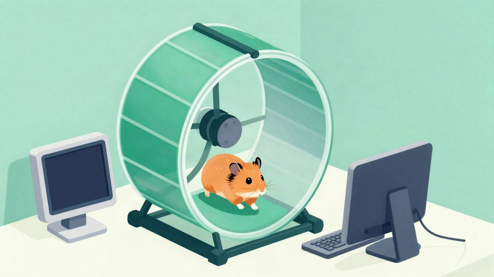

Fable 5.2 je u jednom potezu složio 12-level beat ’em up za četiri igrača

Autor tvrdi da je Fable 5.2 prema crtežima njegova nećaka složio igrivu beat ’em up igru s 12 razina, 18 likova i podrškom za do četiri igrača. Kaže i da je model generirao oko 175 slika i 140 audio isječaka, a prije završnice je igru testirao botom kroz svih 12 razina.
Autor objave tvrdi da je Fable 5.2 u jednom pokušaju dovršio dječji beat ’em up prema crtežima njegova nećaka. Igra ima 12 razina, 18 likova i podršku za do četiri igrača, a nastala je uz originalne vizuale, glazbu i spikera koji doziva imena likova.
Prema njegovu opisu, početna ideja došla je od nećaka Aidena, koji je nacrtao dokumente za dizajn igre. U njima je predvidio pet igrivih heroja, uključujući obiteljskog psa Dogga, 12 bossova i priču u kojoj se spašava štene Pudding, dok se roditelji otključavaju kao posebni likovi.
Autor navodi da je prvu verziju napravio ranije, uz Claude Code, Opus 4.8 i Fable 5, ali da je ta verzija bila kratko igriva. Kaže i da je potom dobio rani pristup Fableu 5.2 i isprobao ga na najambicioznijem zadatku koji je imao pri ruci, odnosno na dovršavanju te igre.
Za završnu verziju, prema njegovim riječima, model je sam preradio većinu koda, dodao cutscene, sanduke za razbijanje i završetak te generirao oko 175 slika i 140 audio isječaka. U razvoju je, tvrdi, napravio i bota koji je igrao igru kroz svih 12 razina u headless browseru i provjeravao snimke zaslona tražeći probleme.
Autor piše i da je prije dolaska djece napunio četiri PS4 kontrolera i spojio ih na MacBook, što je radilo bez problema. Nakon prvih testiranja tražene su dodatne izmjene, pa je za jednog lika dodan poseban Hulk Smash napad, a za drugog je posebna sposobnost pretvorena u široki udar munje i plavog plamena.
Na kraju opisuje verziju s proširenom obitelji, uključujući bake i djedove, kao i njihove ljubimce, a posljednje spašavanje vezano je uz prabaku koja je umrla ranije ove godine i u igri je prikazana kao anđeo. Autor zaključuje da je riječ o velikom koraku za izradu cijelih igrivih igara u jednom potezu.
Izvor: Hacker News
Povezani članci
 Mark Cuban tvrdi da Facebook prikazuje deepfake oglase s njegovim licem, a Meta navodno zarađuje 16 milijardi dolara na prijevarama6. studenoga 2026.
Mark Cuban tvrdi da Facebook prikazuje deepfake oglase s njegovim licem, a Meta navodno zarađuje 16 milijardi dolara na prijevarama6. studenoga 2026.
Korisnik s Reddita tvrdi da lokalni AI napaja hrčkom Wallyjem26. listopada 2026. Recursive je objavio Flint, besplatni coding model za laptop koji je velikim dijelom izgradio AI21. listopada 2026.
Recursive je objavio Flint, besplatni coding model za laptop koji je velikim dijelom izgradio AI21. listopada 2026.